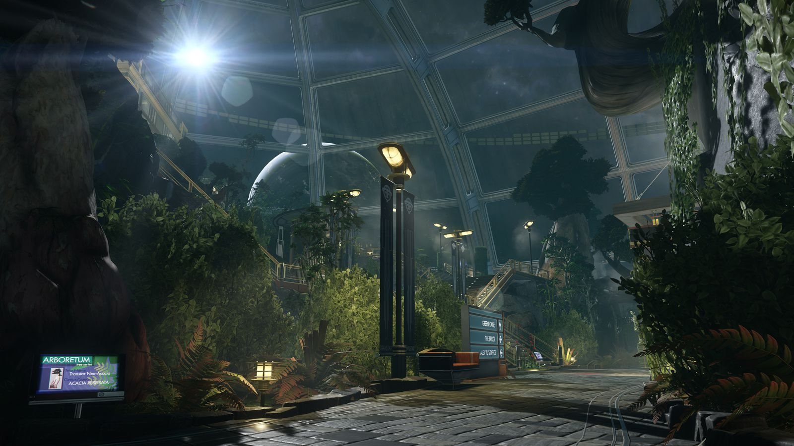
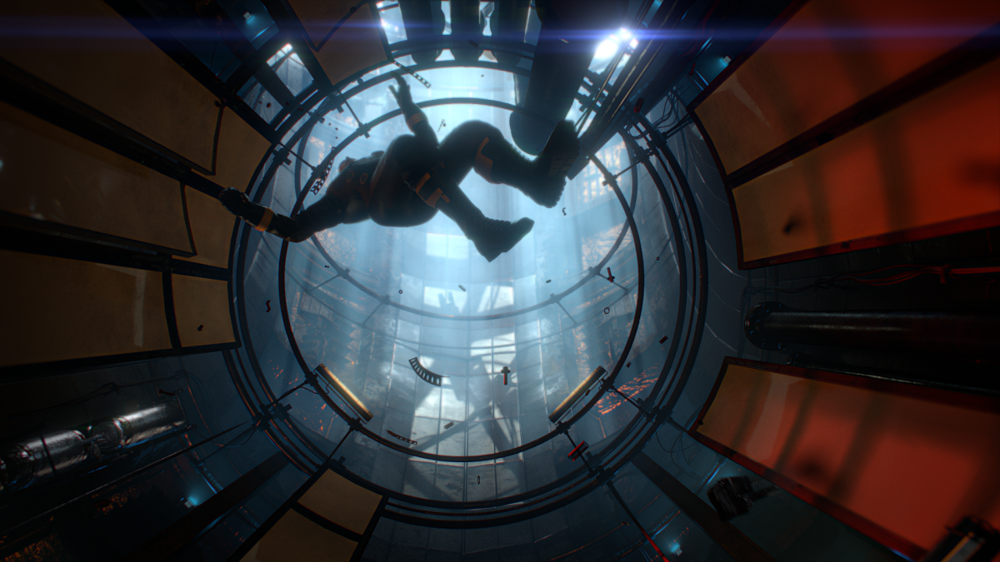

The Arboretum
the location where the majority of the station's food is grown. Researchers also work on various agronomic breakthroughs

G.U.T.S.
is a zero gravity utility tunnel system used as for transport and various service aboard the station